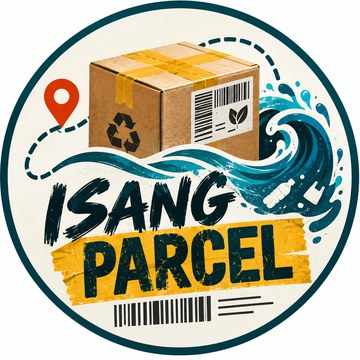

Isang Parcel
Home
Milestone 1
What To Do?
Existing Solutions
Compare Solutions
What’s Missing?
Sources MS2
Take Action
About
Follow the Parcel
The Issue
Who’s Responsible
Sources MS1
Opening the station…
Tap here if it doesn't open.